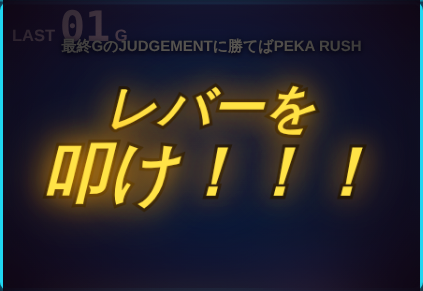
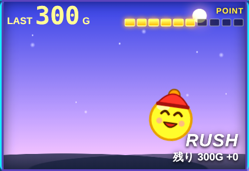
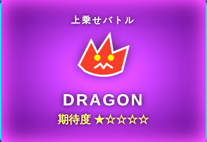

ペカり君 攻略ガイド
設定差・ゲーム性・演出の楽しみ方 (見出しをタップで開閉)
ゲームの流れ
ペカり君は、GOGOランプの点灯(ペカ)を待つパチスロ。通常時はレバーを叩いてリールを止めるだけ。ランプが光ったら 7 を揃えてボーナス、そして AT へ。
前兆に入る契機は、スイカ・チェリー・チャンス目。ごくまれに、通常時から直CZ・直BIG・直AT・直MOUNTAINへ飛ぶことがある。

目押しのこと
チェリーは左リール、スイカは中リールを意識すると拾いやすい。7 はふつうは自動で揃うので目押し不要。ただし 7 と別の絵の 2 択が出たときは、7 を狙って揃えると直BIG。
通常時には出ない目
- 第1リールに 白7・スイカ・白7 が止まる: その場で当選確定。派手な演出が入る(AT中・ボーナス中・CZ中でも同じ)
- 白7の斜め揃い: BIG と AT が同時に確定
- 色違いの7が揃う: ボーナス確定と同じ意味。通常時の外れ目としては出ない
これらが通常時に見えたら、ボーナス確定のサイン。ふつうの外れ目としては絶対に出ないので、安心して喜んでいい。
設定表
設定は 1〜6 の 6 段階。高いほどボーナスが軽く、ATにも入りやすい。数値はシミュレーション上の目安。「ランダム」を選ぶと設定は内部で決まる。
| 設定1 | 設定2 | 設定3 | 設定4 | 設定5 | 設定6 | |
|---|---|---|---|---|---|---|
| 機械割 | 約100% | 約103% | 約106% | 約110% | 約115% | 約120% |
| ボーナス(基本)※ | 1/772 | 1/745 | 1/724 | 1/673 | 1/639 | 1/623 |
| AT突入率(低ランク)※ | 20% | 21% | 22% | 23% | 24% | 25% |
| AT突入率(高ランク)※ | 76% | 77% | 79% | 80% | 82% | 84% |
| ATタイプ:HEAVEN | 12% | 13% | 14% | 15% | 17% | 20% |
| ATタイプ:DEATH | 4% | 4% | 5% | 6% | 7% | 8% |
| 次回:通常 | 56% | 55% | 54% | 52% | 50% | 48% |
| 次回:好調 | 29% | 29% | 29% | 30% | 30% | 30% |
| 次回:絶好調 | 11% | 12% | 12% | 13% | 14% | 15% |
| 次回:天国 | 4% | 4% | 5% | 5% | 6% | 7% |
| 222 OVER | 出ない | 出る可能性あり | ||||
| 444 OVER | 出ない | 出る可能性あり | ||||
| 456 OVER | 出ない | 出る可能性あり | ||||
| 666 OVER | 出ない | 出る可能性あり | ||||
※ ボーナス確率は、前兆やチェリー・スイカ・チャンス目で当たりやすくなる前の数字。実際の体感は 1/260G 前後。
※ BIGは200枚、REGは100枚で固定。AT突入率は枚数ではなく、内部の「当選ランク」で決まる(高ランクほど高い)。ランクが高いと、虹オーラ・白7・SUPER も出やすい。
遊び方のモード
| 設定1 | 設定2 | 設定3 | 設定4 | 設定5 | 設定6 | |
|---|---|---|---|---|---|---|
| 本気 / 遊本気 | 約100% | 約103% | 約106% | 約110% | 約115% | 約120% |
| 極楽 / 遊極楽 | 約110% | 約114% | 約118% | 約122% | 約126% | 約130% |
- 本気 ふつうの遊び方
- 極楽 ATに入りやすく、HEAVEN や DEATH も多め
- 遊 当たりやすさが約2.5倍。そのかわりボーナスの枚数もATのG数も半分。演出をたくさん見たい人に
設定画面の上のボタンで切り替え。遊モードは、本気・極楽と同じ機械割になるよう調整してある。
ボーナス
- BIG BONUS(PEKA CHANCE) 7 が揃う。200枚固定。突入時に液晶へ大きく「BIG BONUS」。実質ここがATの入口
- REG 7・7・BAR が揃う。100枚固定。REG後の約30Gは BIG に当選しやすい。まれに REG 中に BIG へ昇格(BONUS確定画面が出る)
- AT に入らなかった(スルー)回数が増えるほど次回の AT 突入率が上がる。3 スルーで約3倍

左: BIG BONUS 突入 / 右: 結果画面

画面のふちのオーラ
ボーナス中は、ふちが 白 → 青 → 黄 → 緑 → 赤 → 金 → 虹 の順に色づき、期待が高まる。白のまま終わっても AT に入ることはある。赤以上なら期待、虹は AT 確定。
BIG中のレア役とサンド目
- レア役: 無条件でオーラ LEVEL UP。強いレア役は 2 段階 UP
- サンド目(バー・チェリー・バー)を揃える: 一発で PEKA RUSH 確定。SUPER にも優遇される
最終ゲームの JUDGEMENT
最終ゲームは「レバーを叩け！！！」。レバーを叩いた結果で、AT 当選かハズレかが決まる。文字の色が期待度。
| 白 | 赤 | 金 | 虹 |
|---|---|---|---|
| 通常 | 80%以上 | 96%以上・AT性能良 | 100%・AT性能最高 |

AT(PEKA RUSH)
AT 中は、ベル・チェリー・スイカでゲーム数の上乗せが狙える。PUSH ボタンが出たら押したくなるはず。
- PEKA RUSH ふつうのAT。HEAVEN は出玉も上乗せも多め、DEATH はごく稀にとんでもない枚数になる
- SUPER PEKA RUSH SUPER / HEAVEN SUPER / DEATH SUPER。純増が多い。押し順ナビの第1停止が 7(色もタイプに合わせる)。ふつうの AT はベル 11 枚、SUPER は 15 枚
- 白7・虹オーラ・高ランク・サンド目などが SUPER の出やすい条件


赤のナビ(チェリー絡み) / 紫のナビ(スイカ絡み。ここは期待大)
ポイントメーターと上乗せバトル
AT 中は、液晶の右上に 10 個のメーター。レア役で必ず +1P、強レア役で +2P 以上。AT 中にサンド目を揃えると、G数の上乗せに加えて +3P 以上。10 個たまると上乗せバトルが始まる。
- 10G 以内に敵を倒せば、G数を上乗せ。役ごとにダメージが入り、レア役ほど大きい
- 敵は 5 種類。期待度は ★1〜★5 で、高いほど倒しやすい
- 開始時の背景色でも期待度が分かる。青 ＜ 黄 ＜ 緑 ＜ 赤 ＜ 紫
- 星と背景色が食い違うことがある。★1なのに紫背景なら熱い


左: ポイントメーター / 右: バトル開始(★1なのに紫背景)
PEKA! PEKA! MOUNTAIN!
AT 中に当たると、ゾーンに突入。5〜10 ゲームのあいだ毎ゲーム PUSH のチャンス。ロゴの色(青 / 緑 / 金 / 虹)が勝負どころを知らせる。終了時には、上乗せの合計がでかでかと出る。


左: ゾーン中 / 右: PUSH ボタン。押した瞬間に結果が分かる
小役
チェリー、スイカ、チャンス目には、それぞれ弱と強がある。強いほど、ボーナスにつながりやすく、AT 中の上乗せも多くなりやすい。
- 弱チェリー 左リール上段か下段にチェリー
- 強チェリー 左リール中段にチェリー
- 弱スイカ 左上から右下の斜めに揃うスイカ。第1リール上段に止まったときだけ
- 強スイカ 上段に横に揃うスイカ。第1リール上段に止まったときだけで、中リールを狙う必要がある
- 弱チャンス目 中段にリプレイ・リプレイ・ベル。揃わない形
- 強チャンス目 第1リール上段・第2リール中段・第3リール中段にスイカ。揃わない形で、期待が大きい
AT 中は、強チェリーと強スイカで上乗せが決まりやすい。弱でもうまくいくことはある。
設定示唆
OVER「222」が出たら
OVER「444」「456」なら
OVER「666」が出現したら
結果画面トロフィーの色
サイドランプ左右のペカランプ
次回示唆AT終了後の「弱・中・強・激アツ」
演出の楽しみ方
前兆・CHANCE ZONE・潜伏
前兆ランプ・ステージ・連続演出
潜伏前兆に行かないボーナス
サンド目通常時はほとんど出ない
CHANCE ZONEレア役のあとの6G
成功＝6G 以内に当選(前兆に入った時点でボーナス確定)。HOLD＝連続演出が出たゲームはゾーンのゲーム数を消化しない。まれに CZ 0G で当たっていなければ「LOOP!!!!」と出て最初からやり直し、当たるまで繰り返す「むげんLOOP」になる。
連続演出ストーリーが進むほど熱い
ハズレ矛盾気づく人だけが気づく
救済ハマり中のサポート
ステージ昼・夕・夜
液晶と示唆
PUSH常設PUSH ボタンと液晶のPUSH
液晶リールの上の小さな画面
役の示唆飛来物と図柄
ボーナス示唆星・ロケット・宝箱
天候雨 → 豪雨 → 雷
ドンドンドン揺れの回数
サイドランプ虹色
押し順ナビ先頭だけ・スイカチェリー
演出液晶筐体上部の表示
予告
通常時の予告カットイン・ステップ・会話・暗転
子役の予告たくさんの種類
ペカり方ランプの光り方
連続演出リールが止まったと思ったら
逆転ガッカリのあとに
取りこぼし小役を外したら
2択7とほかの絵
ボーナス・AT 中の演出
ボーナス・AT中コンボとミッション
マウンテン山を登るゲージ
ZONE END上乗せの合計
ベル・リプレイ通常時の小さな楽しみ
コインベルに合わせて降るコイン
AT中レア役と上乗せ
記録・設定まわり
記録トロフィー・ミッション・ランキング
称号集める楽しみ
小ネタキリ番、ささやき、衣装
ウェイト回転の間隔
演出の濃さや示唆は「そうかもしれない」の積み重ね。1 回の結果で一喜一憂せず、長く遊ぶなかで気づく楽しさを味わってほしい。
立ち回りのヒント
- まずは設定 4 前後(初期設定)で、ひととおりの流れを体験する
- 慣れたら「ランダム」にして、示唆を頼りに設定を推理してみる
- OVER やトロフィーは、1 回ではなく複数回の傾向で見る
- 矛盾した目や、通常時に出ない目が出たら、ボーナス確定のサイン
- ナビが出たら素直に従う。押し順のミスは意外と痛い
※ 本ガイドは非公式の遊び心ある読み物です。数値や挙動は、バージョンアップで変わる場合があります。